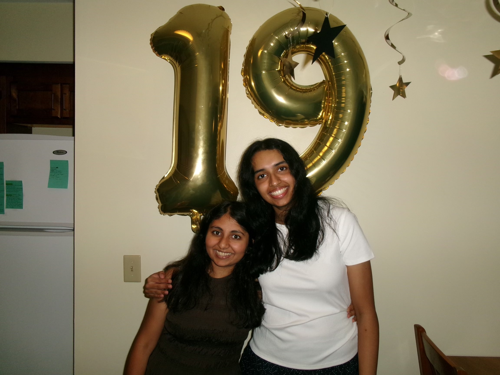
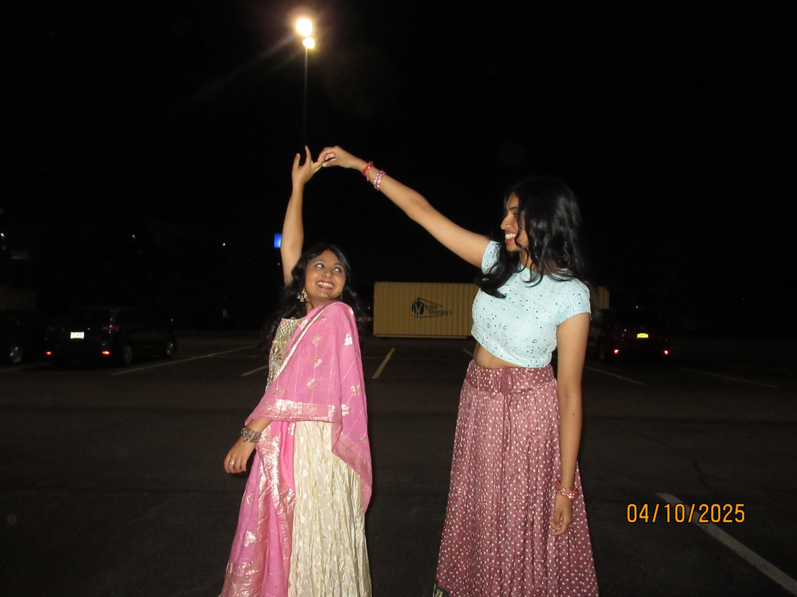
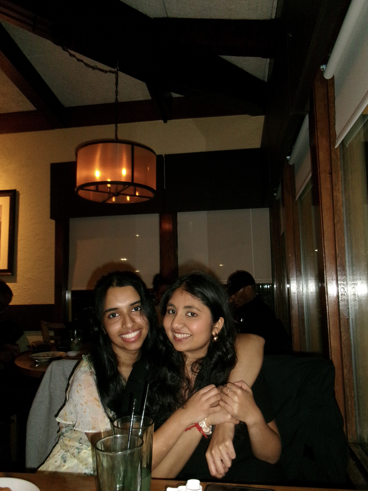

Prevention is the new glow up! Our platform makes vaccine tracking simple, interactive, and empowering so users can confidently stay ahead of their health. It helps you see where you stand in your vaccination journey and shows what vaccines you may still need — because taking care of your health should be easy, clear, and stress-free.
Together, from freshman year we have been reminding each other how to stay on top of stuff!
Here is us extending that friendship to you! Suhani is a 2nd year CS Major at RIT, making
creative DIY gifts for everyone around her despite GradeScope telling her to stop.
Sahasra is a 2nd year CS Major at RIT, always taking pictures of her friend — even if she
gets 2 photos of herself.
Immerse yourself in our quirky website — Suhani and Sahasra’s gift to you!
Welcome to the 3 W’s of Getting Immunized platform. Our goal is to help individuals stay informed and proactive about their vaccination health by making it easier to understand what vaccines they need, when they need them, and why they are important. Many people struggle to keep track of booster shots, updated vaccine recommendations, and age-based requirements, so we created this platform to organize that information in one simple and accessible place. We have a girly pop design to make the experience enjoyable and pretty duh! Additionally, we have a vaccination map guiding users to nearby vaccination centers and clinics so they can easily find places to get vaccinated. In addition to vaccination tracking, we also focus on women’s health awareness by including questions and information related to menstrual health, reproductive health, and preventive screenings. Our mission is to make health tracking organized, understandable, and accessible for everyone.
AS AN ADULT YOU ARE IN CHARGE OF YOUR HEALTH — AND WE WANT TO HELP YOU TAKE CONTROL 💖